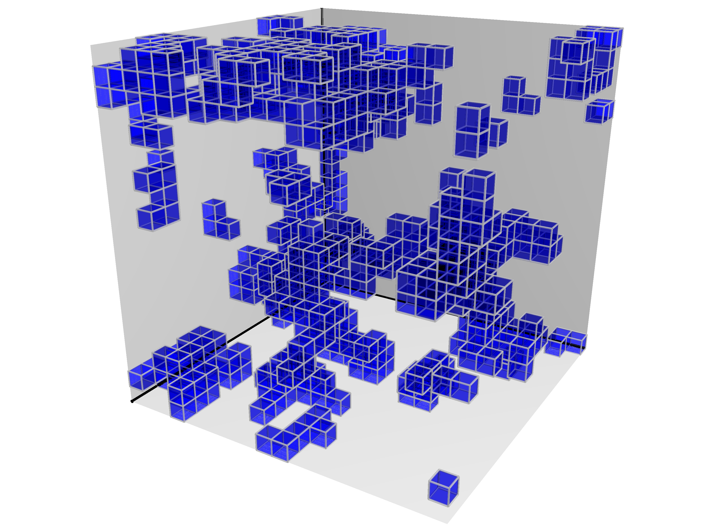
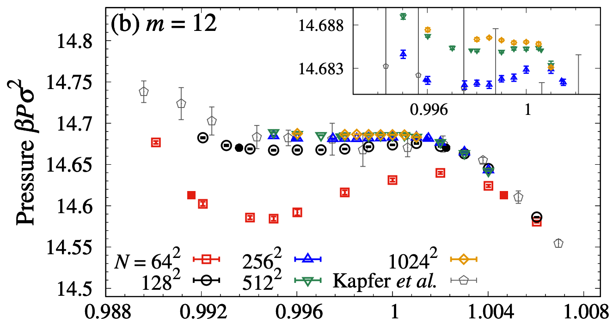
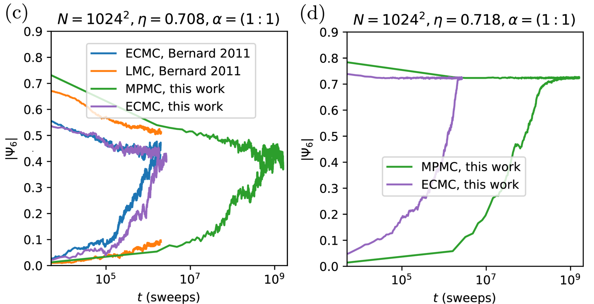
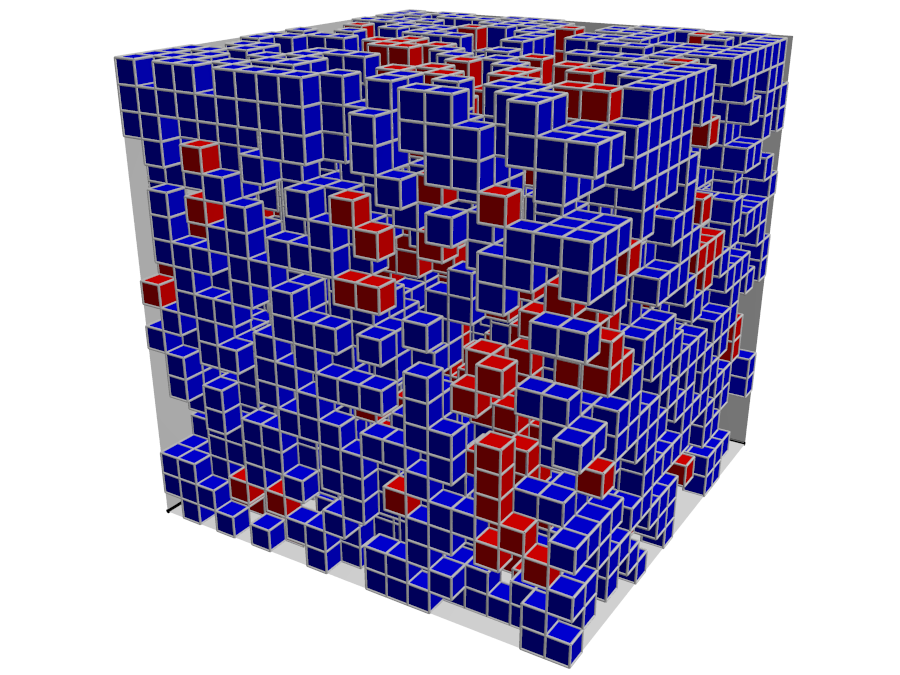
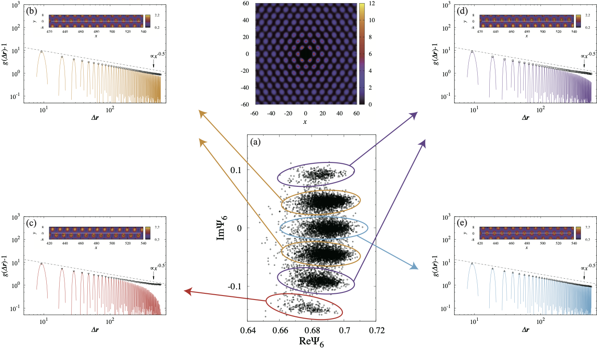
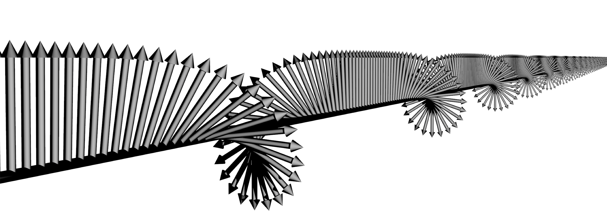

Collective relaxation dynamics in a three-dimensional lattice glass model
arXiv:2307.08110

Liquid-hexatic transition for soft disks
Physical Review E 108, 024103 (2023)
See also our open-source code on GitHub and the associated dataset on Zenodo.

Hard-disk pressure computations — a historic perspective
Journal of Chemical Physics 157, 234111 (2022)

Collective dynamics in a glass-former with Mari-Kurchan interactions
Journal of Chemical Physics 156, 244503 (2022)
Stationary Bootstrap: A Refined Error Estimation for Equilibrium Timeseries
arXiv:2112.11837
See also our Python package implementing the stationary bootstrap method
Relaxation Dynamics in the Energy Landscape of Glass-Forming Liquids
Physical Review X 12, 021001 (2022)

Relaxation Dynamics of Non-Brownian Spheres Below Jamming
Journal of Statistical Physics 182, 37 (2021)

Lattice Glass Model in Three Spatial Dimensions
Physical Review Letters 125, 065501 (2020)

Solid-liquid transition of skyrmions in a two-dimensional chiral magnet
Physical Review B 99, 064435 (2019)

Event-chain Monte Carlo algorithm for continuous spin systems and its application
Journal of Physics: Conference Series 750, 012014 (2016)
Phase transitions and ordering structures of a model of chiral helimagnet in three dimensions
Physical Review B 94, 064428 (2016)

Event-chain algorithm for the Heisenberg model: Evidence for z ≃ 1 dynamic scaling
Physical Review E 92, 063306 (2015)